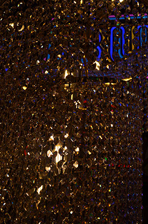

Describe Brown as a color...
Brown is soft and welcoming, like worn leather, wooden furniture, or a favorite sweater.
like worn leather, wooden furniture, or a favorite sweater.
It has a quiet warmth that doesn’t demand attention but
As a color, brown creates a feeling of home and comfort,
inviting reflection and calm.
It is a shade that encourages stillness and

appreciation for simple, everyday beauty.